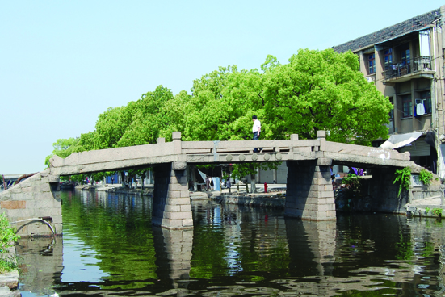

嘉兴市文物保护网 · 市级文物保护单位 · 2014-06-16 · 原文

油车港长生桥位于嘉兴市秀洲区油车港镇澄溪村澄溪大街31号南面。据桥额小字可知此桥重建于清乾隆五十五年（1790）。南北横跨澄溪港，北侧为澄溪大街、南侧为港南大街，系三孔墩式石板桥，全长约22米，宽2.97米，桥面由5块石板并列组成，河中两个桥墩为石块砌筑，单板最大跨度6.43米。桥底距水面高度2.4米。桥面两侧设有石栏板，上有方形望柱，南北落坡略呈喇叭状，各设石阶7级。东西原有五字桥额、现被水泥抹封，额旁镌刻小字“乾隆五十五年”，无桥联。桥身局部刻有云雷、卷莲等纹饰。此桥形制规整，做工考究，其用墩架设石板桥的工艺在嘉兴较为少见，具有较高的科学、艺术和历史价值。2009年公布为嘉兴市级文物保护单位。